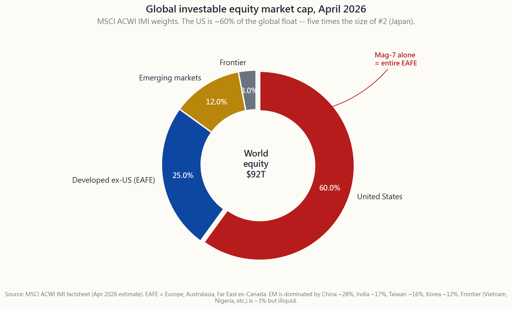
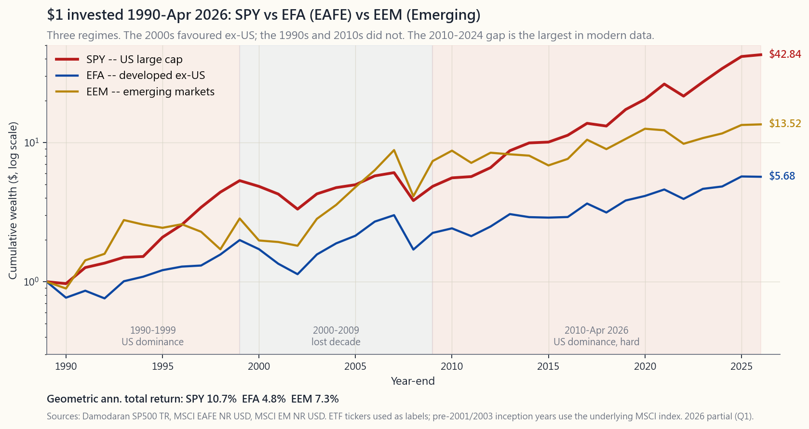

Side Lesson 18: Global Markets — The Case For and Against International Diversification
1. Why This Is Important
Open any introductory portfolio textbook and you will find the same sentence: *the U.S. is roughly 60% of global market capitalization, so a properly diversified equity portfolio should hold the other 40% overseas.* It sounds obvious, almost a tautology. This course disagrees with the conclusion. Side lesson 18 explains the disagreement and gives you the rule that the rest of the curriculum quietly relies on.
There are four reasons this is worth a full lesson rather than a footnote:
most retail investors will face.** It is bigger than which factor tilt to adopt, bigger than active vs passive — because it controls roughly forty percentage points of your equity exposure. Getting the right answer matters more than almost anything else.
sample.** Modern Portfolio Theory was canonised in the 1950s-1980s, when U.S., U.K., German, and Japanese markets all looked roughly comparable on the dimensions a textbook cared about (free float, accounting, rule of law). That is not the world investors live in today. Russia 2022 and China 2021 are not edge cases — they are the modal foreign-equity outcome over a long enough horizon.
noise.** It was a structural divergence in earnings growth, capital
formation, and corporate governance. The textbook models that
recommend 40% international were calibrated on a regime that no
longer exists.
premia to week 24's institutional sleeve template — implicitly restricts itself to U.S.-listed securities. This side lesson explains why, so the rule does not feel arbitrary when it shows up in later weeks.
The textbook position is not wrong; it is incomplete. The honest answer is that international diversification gives you a real mathematical benefit if and only if the foreign markets you buy share four properties with the U.S.: rule of law, accounting transparency, minority-shareholder rights, and a deep secondary market. Roughly half of "international" by index weight does not clear that bar.
2. What You Need to Know
2.1 The Map: How Big Is "the World" Outside the U.S.?
The MSCI All Country World Investable Market Index (ACWI IMI) is the broadest investable equity benchmark on the planet. As of April 2026 its weights look approximately like this:
- United States — ~60%. Roughly $55T market cap, with the
- Developed ex-U.S. (EAFE) — ~25%. Japan ~6%, U.K. ~4%,
- Emerging markets — ~12%. China ~25-30% of the EM bucket,
- Frontier — ~3%. Vietnam, Nigeria, Kenya, Bangladesh, Sri Lanka,

The key intuition the chart should leave you with: *global market cap is dominated by one country.* This was not always true — in 1989, at the peak of the Japanese bubble, Japan was briefly the largest equity market in the world and the U.S. was a hair behind. Forty years later, the gap is roughly five-to-one. That regime change matters more than any backtest.
2.2 The Performance Tape, 1990-2024: Two Decades, Two Stories
The textbook case for international diversification leans heavily on the 2000-2009 "lost decade" — the period when SPY went sideways and EAFE / EM significantly outperformed. The textbook is right that this period existed. It is wrong to extrapolate from it.
A cleaner way to look at the same data: the period **1990 through April 2026** decomposes into roughly three regimes.
- 1990-1999: U.S. dominance. SPY compounded at about 18% per
- 2000-2009: International dominance. SPY -1%/yr (the dot-com
- 2010-2024: U.S. dominance, hard. SPY about +14%/yr.

The honest reading of this chart: **leadership has rotated, and nobody knows where it goes next.** That is also Horace's first principle: *alpha is rare; the toolkit is portfolio construction.* If you cannot predict which region wins the next decade, the standard textbook response is *own all of them in proportion to size.* This course's response is different and is explained in §2.4.
2.3 The Currency Layer
International returns have two components: the foreign-currency return of the underlying stock, plus the change in the foreign-currency-to-dollar exchange rate. Over a single year these two pieces are roughly the same size in volatility — about 7-9% each — and the FX piece can flip a positive local return into a negative dollar return or vice versa. 2014-2016 (strong dollar) and 2022 (very strong dollar) hurt unhedged ex-U.S. holdings; 2002-2007 (weak dollar) and 2017 (weak dollar) helped.
You can hedge currency. Vehicles like HEFA (hedged EAFE) and DBEF buy a rolling forward to neutralise the FX leg. The hedge costs roughly the interest rate differential — about 1% per year against the euro, more against the yen when U.S. rates are higher than foreign rates. Empirically, over 10-year windows the *currency effect averages close to zero* but adds about 30-40% of the volatility of unhedged international equity. So the trade-off is clean: hedge if you care about year-to-year noise, leave unhedged if you have a 10+ year horizon and want the diversification of holding non-dollar assets. Most retail-grade research lands at "leave it unhedged for the equity sleeve."
This course leaves the question moot, because the U.S.-only rule side-steps it entirely.
2.4 The Political-Risk Premium and the Investable-Universe Rule
The argument the textbook does not make is the one that determines this course's allocation rule. International equities — especially emerging-market equities — carry a class of risk that does not show up in any of the standard sigma / VaR / drawdown statistics: the risk of expropriation. The textbook implicitly assumes you can always sell.
A short list of times that assumption broke in the last decade:
- China 2021. The CCP's "common prosperity" campaign wiped
- Russia 2022. After the Ukraine invasion the Moscow Exchange
- Hong Kong 2020-2024. The National Security Law and subsequent
- Turkey 2018-2024. Erdogan's unconventional monetary regime
The pattern in all four cases is the same: *an event the U.S.-listed investor could not hedge against, did not show up in the historical risk model, and could not be unwound at any price.* This is the political-risk premium, and the standard equity-premium math does not capture it.
This course's response — the "investable universe" rule — is to **restrict the entire recommended portfolio to U.S.-listed equities.** The rule has four pillars:
the government. The Fifth Amendment takings clause has been tested, and it works.
and 10-Q statements audited under PCAOB oversight. Foreign-private issuers reporting under their home regime do not get the same audit guarantee.
200 years of case law protecting minority holders against controlling-shareholder self-dealing. China has none. Russia has none. Korea is improving but is not there yet.
a tight bid-ask spread on any trading day in any regime. You cannot say that about Vietnam, Nigeria, or Argentina.
The four pillars are substitutes for the diversification benefit. You give up about 40% of the global investable opportunity set; in exchange you get a portfolio you can actually liquidate in a crisis and that nobody can confiscate by political decision.
2.5 The Compromise Lane: U.S.-Listed ADRs
Refusing to own EFA / VXUS / VWO does not mean refusing to own non-U.S. companies. The compromise — the one the rest of the course quietly assumes — is **U.S.-listed American Depository Receipts (ADRs).**
An ADR is a U.S.-listed share of a foreign company, registered with the SEC, custodied by a U.S. bank, and subject to U.S. rule of law. Buying TSM (Taiwan Semiconductor) on the NYSE is materially safer than buying 2330.TW on the Taipei exchange — same underlying business, but the U.S. listing forces SEC reporting, U.S. courts have jurisdiction, and the shares clear through the same DTC infrastructure as AAPL.
The shortlist of high-quality ADRs that earn a place in the course's investable universe:
- TSM — Taiwan Semiconductor. Effectively a monopoly on
- ASML — Dutch maker of EUV lithography tools. The only
- SAP — German enterprise-software incumbent.
- NVO — Novo Nordisk, Danish maker of Ozempic.
- TM / SONY / HMC — high-quality Japanese exporters.
- SHOP — Shopify, Canada-domiciled but NYSE-listed.
The mechanic to internalise: *the investable universe is defined by the listing venue, not by where the company does business.* TSM is in. 2330.TW is out. Both are claims on the same assembly line.
3. Common Misconceptions
portfolio."** This is the textbook recipe. It assumes all 100 cents on the dollar of global cap are equally investable. They are not.
low correlation."** Correlations between SPY and EFA have run 0.85 in the last decade — high enough that the diversification math gives you maybe 1-2% volatility reduction, not the 5%+ the textbook suggests.
faster."** Decades of data show GDP growth and equity returns are essentially uncorrelated. China's GDP grew 10x from 2000-2020 and the MSCI China index returned about 5%/yr in that span.
concentrated in U.S. legal jurisdiction. That is a deliberate choice, not an accident. It is the trade-off, not a mistake.
bundled into ETFs. HEFA charges 35bp. That is the cost of the hedge — usable if you want it.
event in the modern era, but China-2021 and Hong Kong's slow re-rating since 2020 are the same family of risk. The base rate is higher than it looks.
identical economic exposure but materially different legal exposure. The U.S. listing is a real protection layer.
MSCI's index decisions are about benchmark coverage; they do not confer rule-of-law. The 2017 A-share inclusion did not change what happened to retail holders of YY, DiDi, or NTES in the 2021-2022 crackdown.
safer than EM but still carries currency risk and concentrated single-country risk (Japan was 70% of EAFE in 1989; the U.K. was 30% in 2000). Diversification within EAFE is uneven.
The 2008 GFC saw EAFE -43% and EM -53% versus SPY -37% — the worst drawdowns of the three were ex-U.S. The diversification benefit fails precisely when you most need it.
4. Q&A Section
**Q: If I follow the U.S.-only rule, what about TSM, ASML, BABA? Are those allowed?** A: TSM and ASML are yes — they are SEC-registered, U.S.-listed, and you have a Delaware-style claim on the depository shares. BABA is a maybe — the wrapper is U.S. but the underlying VIE structure sits inside mainland China and has never been tested by a full expropriation. Size BABA-class names like opportunistic positions, not like core equity.
**Q: What about VXUS or VEU as a core holding? Vanguard sells them precisely for retail.** A: They are perfectly serviceable products. The course rule is not that they are bad; it is that the course's risk-return math deliberately excludes them. If you choose to hold 10-20% in VXUS, your CAGR will look approximately like the lesson's 1990-2024 chart — i.e. lower than U.S.-only over the last 15 years, higher in the early 2000s. You are taking the textbook trade.
**Q: What's the right hedge for U.S.-only concentration risk if I believe the U.S. could underperform for a decade like 2000-2009?** A: Three answers. First, the four-tranche framework already includes a stores-of-value sleeve — gold, real assets — that is currency-agnostic. Second, U.S. multinationals (AAPL, MSFT, PG, KO) earn 50%+ of revenue overseas, so SPY itself is already half-international by economic exposure. Third, if you really want the full FX/region diversification, the cleanest expression is GLD plus a small commodities sleeve, not VXUS.
**Q: Do U.S.-listed ADRs of foreign companies pay foreign withholding tax?** A: Yes. The custodian bank withholds at the foreign-source rate (15% under most treaties, 30% in some cases). In a taxable account you can claim a foreign tax credit on Form 1116. In an IRA the withholding is permanent and not recoverable — which is one reason the course recommends holding international-exposed names in taxable, not tax-deferred accounts. The tax-location lesson covers this in detail.
Q: Is VWO different from EEM? Both are emerging markets ETFs. A: Same asset class, different index providers. VWO follows FTSE (includes Korea), EEM follows MSCI (excludes Korea). VWO's expense ratio is 0.08% vs EEM's 0.70%, which is enough cost difference to matter. If you do hold EM, VWO is the correct vehicle.
**Q: What about the China A-shares MSCI added in 2018-2019? Are those any safer than Hong Kong-listed Chinese shares?** A: They are less safe. A-shares trade on the Shanghai and Shenzhen exchanges and are subject to mainland Chinese law in a way that even Hong Kong listings are not. The 2017 inclusion was a benchmark-coverage decision by MSCI, not an accessibility upgrade. Capital controls limit your ability to sell in a crisis. Hard pass.
Q: How does the lesson square with Horace's barbell principle? A: The barbell says *combine cheap-and-safe + lottery- ticket + nothing in between.* The U.S.-only rule applies to the cheap-and-safe leg: VTI / SCHD / TLT — all U.S.-listed. The lottery-ticket leg is allowed to include non-U.S. names (small TSM or ASML position) because those are sized like options, not like core. The middle of the barbell — international index funds at 40% weight — is exactly what the framework rules out.
Q: What single number would change my mind? A: A persistent reduction in the political-risk premium between the U.S. and the next-largest market (call it Japan or the U.K.). Concretely: if U.K. corporate-governance ratings, accounting transparency, and contract enforcement converged with U.S. levels, plus FX hedging costs collapsed, plus a sustained 20%+ valuation discount opened, then the trade becomes interesting. None of those conditions hold today.
**Q: Doesn't the U.S. itself carry political risk? FTC, antitrust, crypto crackdown, tariff policy?** A: Yes — the U.S. is not zero-political-risk. But the magnitude gap is large. Antitrust unwinds are litigated for years and bounded by the Sherman Act and Delaware case law; they do not look like the China 2021 crackdown. The course's claim is not "U.S. is safe" — it is "U.S. is materially safer on the rule-of-law axis than the alternatives."
**Q: I already own VXUS in my 401(k) and can't easily get rid of it. What now?** A: Don't fight your plan. The 401(k) match (the tax wrapper beats security selection) is worth 50%+ on the dollar; do not sacrifice that to enforce a 5-percentage-point allocation rule. If your plan menu offers VXUS but not a clean U.S.-only balanced fund, hold VXUS in the 401(k) and tilt the taxable account U.S.-only to bring the household total to the target.
**Q: Final question — if I run the global blender in the interactive panel, what should I expect to see?** A: Three things. First, almost any plausible U.S.-heavy mix (70-100% VTI) beats the cap-weighted (60% VTI / 28% VXUS / 12% VWO) on CAGR over the 1990-2024 backtest, by roughly 1-2% per year. Second, the Sharpe gap is narrower than the CAGR gap — international does damp some volatility. Third, the maximum- drawdown line moves around less than you'd expect: the GFC and COVID drawdowns hit everywhere. The data argues for more U.S., not less, even before the political-risk overlay.
附加課 18：環球市場——國際分散投資的正反論據
1. 為何這一課如此重要
翻開任何一本入門級投資組合教科書，你都會看到同一句話：美國約佔全球市值的60%，因此一個經過妥善分散的股票投資組合，應持有其餘40%的海外資產。 聽起來顯而易見，幾乎是老生常談。本課程對這一結論持不同意見。附加課18將解釋分歧所在，並為你說明貫穿整個課程的基本原則。
以下四個原因說明這值得單獨用一課來講，而非一筆帶過：
教科書的立場並無錯誤，只是不夠完整。誠實的答案是：國際分散投資確實帶來真實的數學效益——但前提是你所投資的外國市場與美國同樣具備四項特質：法治、會計透明度、少數股東權益保護，以及成熟的二級市場。按指數權重計算，「國際資產」中約有一半未能達到這個標準。
2. 你需要掌握的知識
2.1 全貌：美國以外的「世界」有多大？
MSCI全球可投資市場指數（ACWI IMI）是全球覆蓋最廣的可投資股票基準。截至2026年4月，其權重大致如下：
- 美國——約60%。 市值約55萬億美元，光是「七巨頭」的自由流通市值，已相當於整個EAFE指數。
- 已發展市場（美國除外）（EAFE）——約25%。 日本約6%、英國約4%、法國約3%、加拿大約3%、瑞士約2.5%，另有德國、澳洲、荷蘭、瑞典、香港、新加坡、西班牙、意大利、丹麥、比利時、芬蘭、挪威、以色列、愛爾蘭、葡萄牙、奧地利、新西蘭。
- 新興市場——約12%。 中國約佔新興市場板塊的25-30%，印度約17%，台灣約16%，韓國約12%，巴西約5%，沙特阿拉伯約4%，南非約3%，墨西哥約3%。
- 前沿市場——約3%。 越南、尼日利亞、肯雅、孟加拉國、斯里蘭卡、羅馬尼亞、科威特（在晉升前）、巴基斯坦、摩洛哥。前沿市場規模太小且流動性太低，即便是機構投資者也鮮少視之為真正的配置標的。
這張圖應該帶給你的核心直覺是：全球市值由一個國家主導。 這並非一直如此——1989年日本泡沫頂峰時，日本曾短暫成為全球最大股票市場，美國緊隨其後。四十年後，兩者之比約為一比五。這一制度性轉變，比任何回測結果都更值得重視。
2.2 表現記錄，1990-2024：兩個十年，兩個故事
支持國際分散投資的教科書論點，很大程度上倚賴2000至2009年的「失落十年」——在那段時間裡，標普500指數原地踏步，而EAFE和新興市場則大幅跑贏。教科書說這段時期確實存在，這是對的。但從中推而廣之，則是錯的。
審視同一數據的更清晰方式是：1990年至2026年4月這段時期，大致可分為三個市場環境。
- 1990-1999：美國稱霸。 標普500年均複合增長約18%，EAFE約7%，新興市場約11%（末段受1997年亞洲金融風暴拖累）。美國科技股的強勢，令其他每一個股票市場都顯得遲緩。
- 2000-2009：國際領先。 標普500年均回報-1%（科技泡沫爆破加上環球金融危機）。EAFE未對沖年均回報+1%（受美元走軟提振）。新興市場+10%/年（金磚國家商品超級週期）。這是現代史上唯一一個持有美國以外股票有回報的十年。
- 2010-2024：美國強勢壓倒一切。 標普500年均約+14%。EAFE年均約+6%。新興市場年均約+4%。這一差距是現代數據中最懸殊的——比1990年代更大——由三個或許持續、或許不持續的因素所驅動：軟件吞噬世界（利好美國科技複合體）、頁岩油革命（利好美國能源自主）、美元走強（打擊未對沖的美國以外持倉）。
對這張圖誠實的解讀是：領導地位曾經輪換，而沒有人知道下一個十年鹿死誰手。 這也是陳馬的第一原則：阿爾法稀缺；工具箱是投資組合構建本身。 若你無法預測哪個地區贏得下一個十年，標準教科書的回應是按市值比例持有一切。 本課程的回應有所不同，將在§2.4中詳述。
2.3 貨幣層面
國際資產的回報由兩個部分構成：以外幣計算的標的股票回報，加上外幣兌美元的匯率變動。在單一年度內，這兩個部分的波動性大致相當——各約7-9%——而匯率部分可將正數的本地回報轉為負數的美元回報，反之亦然。2014至2016年（美元強勢）及2022年（美元極強）對未對沖的美國以外持倉造成損失；2002至2007年（美元弱勢）及2017年（美元弱勢）則帶來助益。
你可以對沖貨幣風險。HEFA（對沖版EAFE）和DBEF等工具透過滾動遠期合約來對沖匯率敞口。對沖成本大致等於利率差——對歐元約每年1%，當美國利率高於外國利率時，對日元的成本更高。從經驗上看，在10年期視窗內，貨幣效應平均接近零，但會使未對沖國際股票的波動性增加約30至40%。因此取捨是明確的：若你在意逐年的雜訊，就選擇對沖；若你的投資期限超過10年並希望持有非美元資產以達至分散，就保留未對沖。大多數零售級別的研究最終傾向於「股票部分保留未對沖」。
本課程對這個問題不置可否，因為美國獨有原則讓這一問題根本不成立。
2.4 政治風險溢價與可投資範圍規則
教科書沒有提出的論點，正是決定本課程配置規則的論點。國際股票——尤其是新興市場股票——帶有一類在任何標準的標準差/風險值/回撤統計中都不會出現的風險：徵收風險。教科書隱含地假設你隨時可以賣出。
以下是過去十年內這一假設被打破的若干案例：
- 中國2021年。 中共的「共同富裕」運動在六個月內令中國科技股蒸發約1.5萬億美元。滴滴在首次公開招股後數月即從紐交所退市。以盈利為目的的補習行業在一夜之間被監管命令宣告非法。持有FXI/KWEB的散戶親眼目睹50至70%的回撤，而無任何基本面催化劑——只是一次政策轉向。
- 俄羅斯2022年。 烏克蘭戰爭爆發後，莫斯科交易所對外國賣家關閉長達數月。及至交易恢復，西方制裁已令美國持有人持有的每一張俄羅斯上市股票實際上變為廢紙。指數提供商將俄羅斯權重標記為零。外國持有的俄羅斯股票中，約500億美元付之東流——這不是市場驅動的回撤，而是政治命令。這是自1959年古巴革命以來最大規模的單一國家資產沒收事件。
- 香港2020-2024年。 《國家安全法》及其後的資本管控收緊，侵蝕了香港過往所享有的法治溢價。在港上市的股票，如今定價已反映出五年前尚不存在的中國內地政策風險。
- 土耳其2018-2024年。 埃爾多安的非常規貨幣政策令里拉購買力蒸發約90%。一隻以里拉計算升值一倍的土耳其股票，換算成美元後仍損失三分之二。
本課程的應對方式——「可投資範圍」規則——是將整個建議投資組合限制於美國上市股票。 這條規則有四根支柱：
這四根支柱是分散投資效益的替代品。你放棄了全球可投資機會集的約40%；換來的，是一個在危機中真正可以套現的投資組合，且無人能透過政治決策加以沒收。
2.5 折衷路線：美國上市存託憑證
拒絕持有EFA/VXUS/VWO，並不等於拒絕持有非美國公司的股票。折衷方案——也是本課程其餘部分默認採用的方案——是美國上市的美國存託憑證（ADR）。
ADR是外國公司在美國上市的股票，已在SEC登記、由美國銀行托管，並受美國法律管轄。在紐交所買入台積電（TSM）的安全性，實質上高於在台北交易所買入2330.TW——標的業務相同，但美國上市迫使其遵從SEC申報要求，美國法院擁有管轄權，股份亦透過與蘋果公司相同的DTC結算基礎設施進行清算。
本課程可投資範圍內的高質素ADR精選名單：
- TSM — 台積電。實際上壟斷了先進邏輯芯片製造。全球最重要的半導體企業。
- ASML — 荷蘭極紫外光刻機製造商。所有先進芯片所用機器的唯一供應商。自1995年起於納斯達克上市。
- SAP — 德國企業軟件龍頭。
- NVO — 諾和諾德，丹麥Ozempic製造商。
- TM/SONY/HMC — 高質素日本出口商。
- SHOP — Shopify，在加拿大註冊，但於紐交所上市。
需要內化的機制是：可投資範圍由上市地點定義，而非由公司業務所在地決定。 台積電（TSM）在範圍之內，而台北上市的2330.TW則在範圍之外。兩者都是對同一條生產線的索取權。
3. 常見誤解
4. 問答環節
問：若我遵循美國獨有原則，台積電、ASML、阿里巴巴是否允許持有？ 答：台積電和ASML是肯定的——它們在SEC登記、於美國上市，你對存託股份享有類似特拉華州法律的索取權。阿里巴巴則視情況而定——外殼是美國的，但標的VIE結構位於中國內地，且從未在全面資產沒收事件中接受考驗。應將阿里巴巴類股票定位為機會性持倉，而非核心股票。
問：VXUS或VEU作為核心持倉如何？先鋒集團正是為散戶投資者而售。 答：它們都是功能完善的產品。本課程的規則並不是說它們不好，而是本課程的風險回報數學刻意將其排除在外。若你選擇持有10至20%的VXUS，你的年複合增長率將大致如本課1990至2024年圖表所示——即過去15年低於純美國配置，但在2000年代初略高。你是在採用教科書的取捨。
問：若我擔心美國可能像2000至2009年那樣跑輸十年，應如何對沖純美國組合的集中風險？ 答：三個答案。第一，四層架構已包含一個價值儲藏倉位——黃金、實物資產——這些資產對貨幣是中性的。第二，美國跨國企業（蘋果、微軟、寶潔、可口可樂）逾50%的收入來自海外，因此標普500本身在經濟敞口上已有一半是國際的。第三，若你確實希望獲得完整的匯率/地區分散，最簡潔的表達方式是黃金加小額商品倉位，而非VXUS。
問：美國上市的外國公司ADR是否需繳交外國預扣稅？ 答：是的。托管銀行將按外國來源稅率預扣（大多數稅務協議下為15%，部分情況下為30%）。在應稅賬戶中，你可透過美國聯邦稅表1116申請外國稅收抵免。在個人退休賬戶（IRA）中，預扣稅是永久性的，無法取回——這也是本課程建議在應稅賬戶而非遞延納稅賬戶中持有具國際敞口股份的原因之一。稅務規劃課將詳細介紹。
問：VWO和EEM有何分別？兩者均是新興市場交易所買賣基金。 答：資產類別相同，指數提供商不同。VWO跟蹤富時指數（包含韓國），EEM跟蹤MSCI指數（不含韓國）。VWO的開支比率為0.08%，EEM為0.70%，費用差距已足夠影響長期結果。若你確實持有新興市場，VWO是正確的工具。
問：MSCI在2018至2019年納入的中國A股，是否比香港上市的中國股票更安全？ 答：恰恰相反，安全性更低。A股在上海和深圳交易所交易，受中國內地法律管轄，程度甚至比香港上市股票更深。2017年納入MSCI是一項基準覆蓋範圍決策，並非可及性升級。資本管控限制了你在危機中的出售能力。堅決迴避。
問：本課的論點如何與陳馬的槓鈴原則相符？ 答：槓鈴原則說的是結合廉價安全的資產與彩票式持倉，中間甚麼也不要。 美國獨有原則適用於廉價安全那一端：VTI/SCHD/TLT——全部美國上市。彩票式持倉那一端，允許包含非美國股票（小量台積電或ASML倉位），因為它們的定位如同期權，而非核心持倉。槓鈴的中間部分——以40%權重持有國際指數基金——正是本框架所排除的。
問：哪一個數字能讓你改變主意？ 答：美國與次大市場（姑且以日本或英國為例）之間政治風險溢價的持續收窄。具體而言：若英國的公司治理評級、會計透明度和合約執行程度收斂至美國水平，同時匯率對沖成本大幅下降，加上出現持續逾20%的估值折讓，那麼這筆交易才變得有吸引力。上述條件目前均不成立。
問：美國本身不也帶有政治風險嗎？聯邦貿易委員會、反壟斷、加密貨幣監管、關稅政策？ 答：是的——美國並非零政治風險。但量級差距是顯著的。反壟斷訴訟會歷經多年訴訟，且受《謝爾曼法》和特拉華州案例法約束；它看起來不像中國2021年的監管打壓。本課程的論點不是「美國是安全的」——而是「在法治這個維度上，美國實質上比其他選擇安全得多。」
問：我的強積金/退休賬戶已持有VXUS，難以輕易調整。現在怎麼辦？ 答：不要為此打亂大局。賬戶的稅務優惠（稅務包裝的價值高於選股）實際上可帶來50%以上的回報提升；不要為了執行5個百分點的配置規則而犧牲它。若你的計劃選項提供VXUS但沒有純美國平衡基金，就在退休賬戶中持有VXUS，並將應稅賬戶傾向於美國獨有配置，使家庭整體持倉接近目標。
問：最後一問——若我使用互動面板的全球配置模擬器，應預期看到甚麼？ 答：三件事。第一，在1990至2024年的回測中，幾乎任何以美國為主的合理組合（70至100% VTI），在年複合增長率上均優於按市值加權的組合（60% VTI/28% VXUS/12% VWO），差距約為每年1至2%。第二，夏普比率的差距窄於年複合增長率的差距——國際資產確實抑制了部分波動性。第三，最大回撤線的變動幅度比你預期的小：環球金融危機和新冠疫情的回撤無處不在。即便在疊加政治風險溢價之前，數據已支持更多美國配置，而非更少。
番外課程 18：全球市場——國際分散投資的正反論點
1. 為什麼這很重要
打開任何一本入門投資組合教科書，你都會看到同一句話：美國約佔全球市值的 60%，因此一個適當分散投資的股票投資組合應持有其他 40% 的海外資產。 聽起來顯而易見，幾乎像是一個同義反覆。本課程對這個結論持不同看法。番外課程 18 將解釋這個分歧，並給出整門課程其他章節所默默依賴的規則。
以下四個原因說明，這值得用整整一課來討論，而不是一個附注：
教科書的立場並沒有錯，只是不完整。誠實的答案是：國際分散投資能帶給你真實的數學效益——但前提是你所購買的外國市場與美國共享四項特質：法治、會計透明度、少數股東權益保護，以及深度的次級市場。以指數權重計算，「國際」部分約有一半無法達到這個標準。
2. 你需要了解的內容
2.1 全貌：美國以外的「世界」有多大？
MSCI 全球可投資市場指數（ACWI IMI）是全球涵蓋範圍最廣的可投資股票基準。截至 2026 年 4 月，其權重大致如下：
- 美國——約 60%。 市值約 55 兆美元，光是「七巨頭」的流通市值就相當於整個 EAFE 指數。
- 已開發市場（不含美國，即 EAFE）——約 25%。 日本約 6%、英國約 4%、法國約 3%、加拿大約 3%、瑞士約 2.5%，以及德國、澳大利亞、荷蘭、瑞典、香港、新加坡、西班牙、義大利、丹麥、比利時、芬蘭、挪威、以色列、愛爾蘭、葡萄牙、奧地利、紐西蘭。
- 新興市場——約 12%。 中國佔新興市場桶約 25-30%，印度約 17%，台灣約 16%，韓國約 12%，巴西約 5%，沙烏地阿拉伯約 4%，南非約 3%，墨西哥約 3%。
- 前緣市場——約 3%。 越南、奈及利亞、肯亞、孟加拉、斯里蘭卡、羅馬尼亞、科威特（晉升前）、巴基斯坦、摩洛哥。前緣市場規模極小且流動性差，即便是機構投資人也鮮少將其視為真正的配置選項。
這張圖應讓你留下的核心直覺是：全球市值由一個國家主導。 這並非一直如此——1989 年日本泡沫高峰期，日本曾短暫成為全球最大股票市場，美國緊隨其後。四十年後，兩者的差距約為五比一。這個制度性轉變，比任何回測都更重要。
2.2 績效紀錄，1990-2024：兩段時期，兩個故事
教科書支持國際分散投資的論點，嚴重依賴 2000 至 2009 年的「失落的十年」——那段 SPY 橫盤整理、EAFE 與新興市場顯著跑贏的時期。教科書說這段時期存在是對的，但從中外推則是錯的。
觀察同一組數據，更清晰的方式是：1990 年至 2026 年 4 月這段期間，大致可分解為三個制度。
- 1990-1999：美國主導。 SPY 年複合報酬約 18%，EAFE 約 7%，新興市場約 11%（1997 年亞洲金融危機在後期咬掉了一塊）。美國科技股的漲勢讓所有其他股票市場相形見絀。
- 2000-2009：國際主導。 SPY 年報酬率約 -1%（網路泡沫清算加金融海嘯）。EAFE 未避險約 +1%（受美元走弱助益）。新興市場約 +10%（金磚四國商品超級循環）。這是現代史上唯一一個持有美國以外股票有回報的十年。
- 2010-2024：美國強力主導。 SPY 約 +14%/年。EAFE 約 +6%/年。新興市場約 +4%/年。差距是現代數據中最大的——比 1990 年代還寬——由三件可能持續、也可能不持續的事情所驅動：軟體吞噬世界（有利於美國科技複合體）、頁岩革命（有利於美國能源獨立），以及美元走強（不利於未避險的美國以外持倉）。
這張圖的誠實解讀是：領先地位曾輪換，沒有人知道接下來會怎樣。 這也是陳馬的第一原則：阿爾法難得；工具箱是投資組合建構。 如果你無法預測哪個地區會在下一個十年勝出，教科書的標準回應是按規模比例持有所有地區。 本課程的回應不同，將在第 2.4 節解釋。
2.3 貨幣層面
國際投資報酬包含兩個組成部分：標的股票的外幣報酬，加上外幣對美元匯率的變動。在單一年度內，這兩個部分在波動性上大致相當——各約 7-9%——而匯率的變動可以將正的本幣報酬翻轉為負的美元報酬，反之亦然。2014 至 2016 年（美元強勢）和 2022 年（美元極度強勢）傷害了未避險的美國以外持倉；2002 至 2007 年（美元弱勢）和 2017 年（美元弱勢）則有所助益。
你可以做貨幣避險。像 HEFA（避險 EAFE）和 DBEF 這樣的工具，透過購買滾動遠期合約來消除匯率風險。避險成本大約等於利率差異——在美國利率高於外國利率時，對歐元約每年 1%，對日圓則更多。從實證來看，在 10 年窗口期內，貨幣效應平均接近於零，但卻為未避險的國際股票增加了約 30-40% 的波動性。因此取捨很清楚：如果你在意年度間的雜訊就做避險；如果你有 10 年以上的投資時間且想要持有非美元資產的分散效益，就不做避險。大多數散戶層級的研究結論是「股票部位不做避險」。
本課程讓這個問題變得無關緊要，因為美國優先規則完全迴避了它。
2.4 政治風險溢酬與可投資範疇規則
教科書沒有提出的論點，正是決定本課程配置規則的那個。國際股票——尤其是新興市場股票——承載著一類風險，它不會出現在任何標準的標準差、風險值或回撤統計中：徵收風險。教科書隱含地假設你隨時都可以賣出。
過去十年，這個假設破裂的簡短列表：
- 中國 2021 年。 中共的「共同富裕」運動在六個月內抹去約 1.5 兆美元的中國科技股市值。滴滴在首次公開發行後數月內從紐交所下市。課外補習產業在一夜之間被監管命令宣告為非法。持有 FXI / KWEB 的散戶目睹了 50-70% 的回撤，沒有任何基本面催化劑——只有政策轉向。
- 俄羅斯 2022 年。 烏克蘭入侵後，莫斯科交易所對外國賣家關閉長達數月。待交易恢復時，西方制裁實際上已使每一張俄羅斯上市股份對美國持有人而言毫無價值。指數提供商將俄羅斯權重歸零。約 500 億美元的外國持有俄羅斯股票被清零——不是市場驅動的回撤，而是政治命令。這是自 1959 年古巴革命以來最大的單一國家徵收事件。
- 香港 2020-2024 年。 《國家安全法》及後續的資本管制收緊，已侵蝕香港曾經擁有的法治溢價。在當地上市的股票，如今正在反映五年前不存在的中國大陸政策風險。
- 土耳其 2018-2024 年。 艾爾多安的非常規貨幣政策摧毀了里拉約 90% 的購買力。一支以里拉計算翻倍的土耳其股票，換算成美元後仍虧損三分之二。
本課程的回應——「可投資範疇」規則——是將所有推薦投資組合限制在美國上市的股票。 這條規則有四根支柱：
這四根支柱是分散投資效益的替代品。你放棄了全球可投資機會集約 40% 的份額；作為交換，你得到一個在危機中真正能夠變現、且不會被政治決定沒收的投資組合。
2.5 折衷方案：美國上市的存託憑證
拒絕持有 EFA / VXUS / VWO，並不意味著拒絕持有非美國公司。折衷方案——也是本課程其他章節所默默假設的——是美國上市的美國存託憑證（ADR）。
ADR 是外國公司的美國上市股份，向 SEC 登記、由美國銀行託管，並受美國法律管轄。在紐交所購買台積電（TSM），實質上比在台灣證券交易所購買 2330.TW 更安全——標的業務相同，但美國上市強制 SEC 申報，美國法院擁有管轄權，股份透過與蘋果（AAPL）相同的 DTC 基礎設施交割清算。
符合本課程可投資範疇的高品質 ADR 精選名單：
- TSM — 台積電。在先進邏輯晶片代工領域實質上是獨占地位，是地球上最重要的半導體企業。
- ASML — 荷蘭極紫外光（EUV）微影設備製造商。是製造所有先進晶片所需機台的唯一供應商。自 1995 年起在那斯達克上市。
- SAP — 德國企業軟體龍頭。
- NVO — 諾和諾德（Novo Nordisk），丹麥 Ozempic 製造商。
- TM / SONY / HMC — 高品質日本出口企業。
- SHOP — Shopify，在加拿大設立但於紐交所上市。
需要內化的操作概念：可投資範疇由上市地點定義，而非由公司在哪裡經營業務。 TSM 在列。同一家公司的台灣上市股票（2330.TW）不在列。兩者都是對同一條生產線的請求權。
3. 常見誤解
4. 問答章節
問：如果我遵循美國優先規則，TSM、ASML、BABA 這些可以持有嗎？ 答：TSM 和 ASML 是可以的——它們是 SEC 登記、美國上市的，你對存託憑證擁有類似德拉瓦州法律風格的請求權。BABA 則介於可以與不可以之間——外殼是美國的，但底層的 VIE 結構位於中國大陸境內，從未在全面徵收事件中接受考驗。像機會性部位一樣配置 BABA 這類股票，而非核心股票。
問：那 VXUS 或 VEU 作為核心持倉呢？先鋒（Vanguard）正是針對散戶銷售它們。 答：它們是完全可用的產品。本課程的規則並非說它們不好；而是本課程的風險報酬數學刻意將其排除在外。如果你選擇持有 10-20% 的 VXUS，你的年複合報酬率看起來將近似本課 1990-2024 年的圖表——即過去 15 年低於純美國配置，但在 2000 年代初期較高。你是在做教科書式的交易。
問：如果我認為美國可能像 2000-2009 年那樣跑輸十年，針對美國優先集中風險，什麼是正確的避險方式？ 答：三個答案。第一，四象限框架已包含一個價值儲存配置——黃金、實物資產——這些資產與貨幣無關。第二，美國跨國企業（AAPL、MSFT、PG、KO）的營收有 50% 以上來自海外，因此 SPY 本身在經濟曝險上已有一半是國際化的。第三，如果你真的想要完整的匯率／地區分散投資，最乾淨的表達方式是持有 GLD 加上少量商品部位，而非 VXUS。
問：美國上市的外國公司 ADR 需要繳交外國預扣稅嗎？ 答：是的。託管銀行依外國來源稅率扣繳（大多數租稅協定下為 15%，某些情況為 30%）。在應稅帳戶中，你可以在 1116 表格申報外國稅額扣抵。在個人退休帳戶（IRA）中，預扣稅是永久性的且無法取回——這也是本課程建議在應稅帳戶而非遞延課稅帳戶持有國際曝險部位的原因之一。稅務配置課程將詳細介紹這一點。
問：VWO 和 EEM 有什麼不同？兩者都是新興市場指數股票型基金。 答：同一資產類別，不同指數提供商。VWO 追蹤富時（FTSE）指數（含韓國），EEM 追蹤 MSCI 指數（不含韓國）。VWO 費用率為 0.08%，相較於 EEM 的 0.70%，這個成本差異足夠重要。如果你確實持有新興市場，VWO 是正確的工具。
問：2018-2019 年 MSCI 納入的中國 A 股，比香港上市的中國股票更安全嗎？ 答：更不安全。A 股在上海和深圳交易所交易，受中國大陸法律約束的程度甚至超過香港上市股票。2017 年的納入決策是 MSCI 的基準涵蓋決定，而非可及性的提升。資本管制限制了你在危機中的賣出能力。堅決回避。
問：這堂課的內容如何與陳馬的槓鈴原則相符？ 答：槓鈴原則說結合便宜且安全的 + 彩票型部位 + 中間什麼都不要。 美國優先規則適用於便宜且安全的那端：VTI、SCHD、TLT——全部美國上市。彩票型部位那端允許納入非美國名稱（少量 TSM 或 ASML 部位），因為這些倉位的大小像選擇權，而非核心部位。槓鈴的中間地帶——以 40% 權重持有國際指數基金——正是本框架所排除的。
問：什麼單一數字能改變我的看法？ 答：美國與下一大市場（稱之為日本或英國）之間的政治風險溢酬出現持續性縮小。具體而言：如果英國的公司治理評等、會計透明度和合約執行力與美國水準趨同，加上匯率避險成本崩潰，再加上出現持續性的 20% 以上估值折價，那麼這個交易就變得有趣。這些條件目前沒有一個成立。
問：美國本身難道不存在政治風險嗎？聯邦貿易委員會（FTC）、反托拉斯、加密貨幣打壓、關稅政策？ 答：是的——美國並非零政治風險。但量級差距很大。反托拉斯的解套會被訴訟數年，且受到謝爾曼法和德拉瓦州判例法的約束；它看起來不像中國 2021 年的管控行動。本課程的主張不是「美國是安全的」——而是「在法治軸線上，美國實質上比其他替代方案更安全。」
問：我的 401(k) 帳戶裡已經持有 VXUS，而且很難輕易處理掉。怎麼辦？ 答：不要跟你的退休計畫對抗。401(k) 的雇主配對（稅務外殼勝過選股）的價值超過每一元的 50%；不要為了執行一個 5 個百分點的配置規則而犧牲它。如果你的退休計畫菜單提供 VXUS 但沒有乾淨的純美國均衡基金，就在 401(k) 裡持有 VXUS，同時讓應稅帳戶傾向美國優先，使整體家庭配置達到目標比例。
問：最後一個問題——如果我使用互動面板的全球混合工具，我應該預期看到什麼？ 答：三件事。第一，幾乎任何合理的美國重倉配置（70-100% VTI），在 1990-2024 年的回測中，年複合報酬率都勝過按市值加權的配置（60% VTI / 28% VXUS / 12% VWO），幅度約為每年 1-2%。第二，夏普比率的差距比年複合報酬率的差距更小——國際配置確實降低了一些波動性。第三，最大回撤線的移動幅度比你預期的更小：金融海嘯和新冠疫情的回撤無處不在。即便在疊加政治風險溢酬之前，數據就已支持更多美國，而非更少。
补充课程第18讲：全球市场——国际分散投资的利与弊
1. 为什么这一讲值得重视
打开任何一本入门级投资组合教材，你都会看到同样一句话：美国约占全球市值的60%，因此一个真正分散投资的股票投资组合应该在海外持有另外40%。 听起来显而易见，几乎是不言而喻的。但本课程不认同这一结论。补充课程第18讲将解释这种分歧，并给出其他课程内容默默依赖的那条基本规则。
以下四个原因说明这个话题值得单独用一讲来讲，而不是一个脚注：
教科书的立场并没有错；只是不够完整。诚实的答案是：国际分散投资能给你带来真实的数学收益——前提是你购买的外国市场具备与美国相同的四个特征：法治保障、会计透明度、少数股东权利，以及深度的二级市场。而按指数权重计算，大约一半的"国际市场"并不满足这一标准。
2. 你需要掌握的内容
2.1 全貌：美国以外的"全球"有多大？
MSCI全球可投资市场指数（ACWI IMI）是全球范围内覆盖最广的可投资股票基准。截至2026年4月，其权重大致如下：
- 美国——约60%。 市值约55万亿美元，仅"科技七巨头"的可流通市值便约等于整个EAFE指数。
- 美国以外的发达市场（EAFE）——约25%。 日本约6%、英国约4%、法国约3%、加拿大约3%、瑞士约2.5%，以及德国、澳大利亚、荷兰、瑞典、香港、新加坡、西班牙、意大利、丹麦、比利时、芬兰、挪威、以色列、爱尔兰、葡萄牙、奥地利、新西兰。
- 新兴市场——约12%。 中国占新兴市场约25-30%，印度约17%，台湾约16%，韩国约12%，巴西约5%，沙特阿拉伯约4%，南非约3%，墨西哥约3%。
- 前沿市场——约3%。 越南、尼日利亚、肯尼亚、孟加拉国、斯里兰卡、罗马尼亚、科威特（晋级前）、巴基斯坦、摩洛哥。前沿市场规模极小且流动性差，即便是机构投资者也很少将其视为真正的配置方向。
这张图应当留给你的核心直觉是：全球市值由一个国家主导。 事实并非向来如此——1989年日本泡沫顶峰时，日本曾短暂成为全球最大的股票市场，美国紧随其后。四十年后，两者差距已约为五比一。这种格局转变，比任何回测数据都更值得重视。
2.2 业绩实录，1990-2024：两个年代，两种故事
教科书对国际分散投资的论证，主要依赖2000-2009年的"失落的十年"——那段时间标准普尔500指数基金（SPY）原地踏步，EAFE和新兴市场的表现则明显更好。教科书说这段时期确实存在，这是对的。但从中推断未来，则是错的。
观察同一数据更清晰的方式是：1990年至2026年4月这段时间大致可以分解为三个阶段。
- 1990-1999年：美国主导。 SPY年复合收益率约18%，EAFE约7%，新兴市场约11%（1997年亚洲金融危机在末段造成较大拖累）。美国科技股的强劲走势让其他市场相形见绌。
- 2000-2009年：国际主导。 SPY年收益率约-1%（互联网泡沫破灭加上金融危机）。EAFE以美元计约+1%（受美元贬值助力）。新兴市场约+10%（金砖国家大宗商品超级周期）。这是现代历史上唯一一个持有美国以外股票有所回报的十年。
- 2010-2024年：美国强势主导。 SPY约+14%/年。EAFE约+6%/年。新兴市场约+4%/年。这一差距是现代数据中最大的——甚至超过1990年代——背后是三个可能延续、也可能不再延续的驱动因素：软件吞噬世界（利好美国科技生态）、页岩油革命（利好美国能源独立），以及美元升值（拖累未对冲的海外资产持有）。
这张图的诚实解读是：市场领导权曾发生轮换，而没有人知道下一个十年会花落谁家。 这也是陈馬的第一原则：阿尔法稀缺；真正的工具是投资组合构建。 如果你无法预测哪个地区赢得下一个十年，教科书的标准答案是按市值比例持有全部市场。本课程的回答不同，将在第2.4节加以解释。
2.3 汇率层面
国际投资收益由两部分构成：外币计价的股票本身的收益，加上外汇汇率相对美元的变动。在单个年度内，这两部分的波动幅度大致相当——各约7-9%——而汇率这一部分可以将正的本币收益转化为负的美元收益，也可以反之。2014-2016年（美元强势）和2022年（美元极强）均拖累了未对冲的海外持仓；2002-2007年（美元疲软）和2017年（美元走弱）则起到了助推作用。
汇率风险是可以对冲的。HEFA（对冲版EAFE基金）和DBEF等产品通过滚动远期合约来中和汇率敞口。对冲成本大约相当于利差——对欧元约为每年1%，当美国利率高于外国利率时，对日元则更高。从经验数据来看，在10年视窗内货币影响平均接近于零，但会给未对冲的国际股票增加约30-40%的额外波动性。因此权衡取舍很清晰：如果你在意逐年的波动噪音，就选择对冲；如果你有10年以上的投资周期，并希望通过持有非美元资产获得分散投资效果，就无需对冲。大多数面向普通投资者的研究倾向于"股票仓位不做对冲"。
本课程将这一问题搁置，因为美国优先规则从根本上绕开了这个问题。
2.4 政治风险溢价与可投资范围规则
教科书中没有提出的论点，恰恰是决定本课程配置规则的那一个。国际股票——尤其是新兴市场股票——承载着一类风险，任何标准的标准差/风险价值/回撤统计都无法捕捉到：征收没收风险。教科书隐含地假设你随时可以卖出。
以下是过去十年中这一假设失效的简要清单：
- 中国2021年。 中共"共同富裕"运动在六个月内将中国科技股市值抹去约1.5万亿美元。滴滴在上市数月后即从纽交所退市。营利性教培行业被一道监管政令在一夜之间宣布为非法。持有FXI/KWEB的普通投资者眼睁睁看着50-70%的回撤，而背后没有任何基本面诱因——只有政策转向。
- 俄罗斯2022年。 乌克兰战争爆发后，莫斯科交易所对外国卖家关闭数月。待交易恢复时，西方制裁已令美国投资者持有的每一只俄罗斯上市股票实际归零。指数提供商将俄罗斯权重标记为零。约500亿美元的外国持有俄罗斯股票蒸发殆尽——不是因为市场下跌，而是政治意志的结果。这是自1959年古巴革命以来规模最大的单一国家征收事件。
- 香港2020-2024年。 《国家安全法》的实施及此后日趋收紧的资本管控，已侵蚀香港曾经享有的法治溢价。在港上市的股票，如今需计入五年前并不存在的中国内地政策风险。
- 土耳其2018-2024年。 埃尔多安的非常规货币政策摧毁了里拉约90%的购买力。一只里拉计价翻倍的土耳其股票，美元口径仍亏损三分之二。
本课程的应对——"可投资范围"规则——是将全部推荐投资组合限定在美国上市证券。 这条规则有四根支柱：
这四根支柱是对分散投资收益的替代。你放弃了约40%的全球可投资机会；作为交换，你得到了一个在危机中真正可以变现、且没有人能以政治决策剥夺的投资组合。
2.5 折中方案：美国上市美国存托凭证（ADR）
拒绝持有EFA/VXUS/VWO，并不意味着拒绝持有非美国公司。折中方案——也是本课程其余内容默默采用的方案——是美国上市的美国存托凭证（ADR）。
ADR是外国公司在美国上市的股份，在美国证券交易委员会注册，由美国银行托管，受美国法律管辖。在纽交所购买台积电（TSM），比在台北证券交易所购买2330.TW要安全得多——底层业务相同，但美国上市强制要求美国证券交易委员会披露，美国法院拥有司法管辖权，股票通过与苹果（AAPL）相同的DTC基础设施清算。
以下是符合本课程可投资范围的高质量ADR名单：
- TSM ——台积电。在先进逻辑芯片制造领域近乎垄断。当今最重要的半导体企业。
- ASML ——荷兰极紫外光刻设备制造商。是印制所有先进芯片的机器的唯一供应商。自1995年起在纳斯达克上市。
- SAP ——德国企业软件巨头。
- NVO ——诺和诺德，丹麦司美格鲁肽（Ozempic）制造商。
- TM/SONY/HMC ——高质量日本出口型企业。
- SHOP ——Shopify，注册地在加拿大，但在纽交所上市。
需要内化的操作逻辑是：可投资范围由上市地点定义，而非由公司的经营地点定义。 台积电（TSM）在内。同一公司的台北上市（2330.TW）在外。两者都是对同一条生产线的权益主张。
3. 常见误区
4. 问答环节
问：如果我遵循美国优先规则，TSM、ASML、BABA是否在允许范围内？ 答：TSM和ASML是可以的——它们在美国证券交易委员会注册、在美国上市，你对存托凭证享有类似特拉华州法律保障的权益主张。BABA是存疑的——外壳是美国的，但底层VIE结构位于中国内地，从未经受过全面征收情景的检验。将BABA类股票按机会性仓位而非核心股票来配置。
问：VXUS或VEU作为核心持仓如何？先锋基金（Vanguard）销售这些产品，正是为普通投资者设计的。 答：这两款产品本身没有问题。本课程的规则并非认为它们不好；而是本课程的风险收益数学有意将其排除在外。如果你选择持有10-20%的VXUS，你的复合年化收益率（CAGR）看起来将大致类似于本讲1990-2024年图表所呈现的结果——即过去15年低于纯美国配置，2000年代初期略高。你在走教科书路线。
问：如果我认为美国可能像2000-2009年那样跑输国际市场长达十年，有什么合适的对冲手段？ 答：三个答案。第一，四仓位框架本身已包含价值储存仓位——黄金、实物资产——这些资产与货币无关。第二，美国跨国公司（AAPL、MSFT、PG、KO）超过50%的营收来自海外，因此SPY本身在经济敞口上已经是一半国际化的。第三，如果你确实需要完整的汇率/地区分散效果，最简洁的表达方式是持有黄金加小仓位大宗商品，而不是VXUS。
问：美国上市的外国公司ADR需要缴纳外国预提税吗？ 答：是的。托管银行会按外国来源税率扣缴（大多数税收协定下为15%，部分情况下为30%）。在应税账户中，你可以通过申报Form 1116来申请外国税收抵免。在个人退休账户（IRA）中，预提税是永久性的、不可追回的——这也是本课程建议在应税账户而非税收递延账户中持有国际敞口名称的原因之一。税务配置课程中将对此进行详细讲解。
问：VWO和EEM有什么区别？两者都是新兴市场交易所交易基金。 答：资产类别相同，指数提供商不同。VWO追踪富时指数（包含韩国），EEM追踪MSCI指数（不含韩国）。VWO的费用率为0.08%，EEM为0.70%，这一成本差距足以影响长期回报。如果你确实要配置新兴市场，VWO是正确的工具。
问：MSCI在2018-2019年纳入的中国A股，比香港上市的中国股票更安全吗？ 答：恰恰相反，更不安全。A股在上海和深圳证券交易所交易，受中国内地法律管辖，这一点甚至超过香港上市股票。2017年的纳入是MSCI的基准覆盖决策，并非可及性的提升。资本管制限制了你在危机中的卖出能力。坚决回避。
问：这一讲与陈馬的杠铃原则如何协调？ 答：杠铃原则说将廉价且安全的资产与彩票型资产结合，中间什么都不放。美国优先规则适用于廉价且安全的那端：VTI/SCHD/TLT——均为美国上市。彩票型仓位允许纳入非美国名称（小仓位TSM或ASML），因为这些按期权规模配置，而非按核心仓位配置。杠铃中间那部分——以40%权重配置国际指数基金——正是这个框架所排斥的。
问：什么样的单一数据变化会让你改变想法？ 答：美国与下一大市场（比如日本或英国）之间政治风险溢价的持续收窄。具体而言：如果英国公司治理评级、会计透明度和合同执行水平向美国看齐，加上汇率对冲成本大幅下降，再加上出现持续的20%以上的估值折价，那么这笔交易开始变得有吸引力。而上述条件今天一个都不成立。
问：美国自身难道没有政治风险吗？联邦贸易委员会（FTC）调查、反垄断、加密货币监管、关税政策？ 答：有——美国并非零政治风险。但量级差距很大。反垄断调查要经过多年诉讼，受《谢尔曼法》和特拉华州判例法约束；其规模和破坏力与中国2021年的整顿截然不同。本课程的主张不是"美国是安全的"——而是"在法治维度上，美国比其他选项实质上更安全"。
问：我的401(k)账户里已经持有VXUS，很难轻易调整。怎么办？ 答：不必强行改变。401(k)的雇主匹配（税收优惠的价值远超选股）每一美元价值超过50分；不要为了执行一个5个百分点的配置规则而牺牲这个优势。如果你的计划菜单提供VXUS但没有干净的纯美国平衡基金，就在401(k)里持有VXUS，同时在应税账户中向美国优先倾斜，使整个家庭的总持仓达到目标。
问：最后一个问题——如果我在交互面板中运行全球配置混合器，预计会看到什么？ 答：三件事。第一，几乎任何以美国为主的合理组合（VTI占70-100%）在1990-2024年的回测中，都以约每年1-2%的幅度在复合年化收益率上超越按市值加权的组合（60% VTI/28% VXUS/12% VWO）。第二，夏普比率的差距比复合年化收益率的差距小——国际资产确实在一定程度上平抑了波动性。第三，最大回撤线的变动幅度比预期小：金融危机和新冠疫情的回撤冲击了所有市场。数据支持更高的美国配置比例，甚至在叠加政治风险溢价之前就已如此。